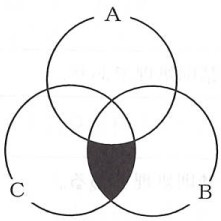

問題６ 次のような特徴をもつソフトウェアはどれか。 ブラウザなどのアプリケーションソフトウェアに組み込むことによって、アプリケーションソフトウェ アの機能を拡張する。 個別にバージョンアップが可能で、不要になればアプリケーションソフトウェアに影響を与えることな く削除できる。 ア． スクリプト イ． パッチ ウ． プラグイン エ． マクロ
問題７ 次のベン図の黒色で塗りつぶした部分の検索条件はどれか。  ア． （NOT A） AND B AND C イ． （NOT A） AND （B OR C） ウ． （NOT A） OR （B AND C） エ． （NOT A） OR （B OR C）